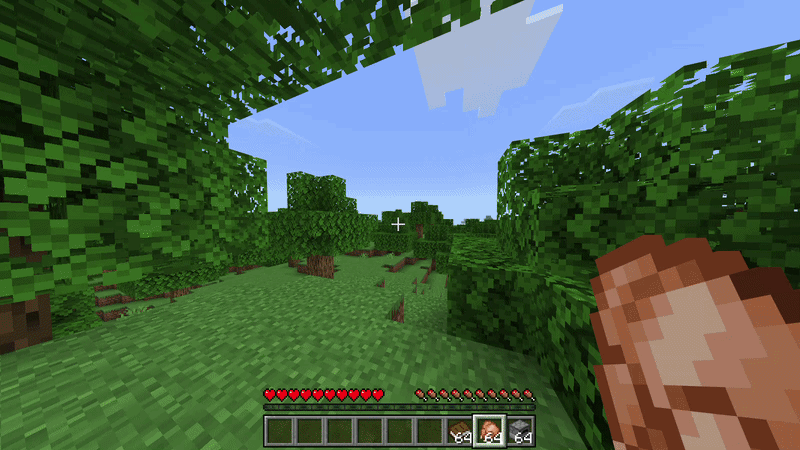
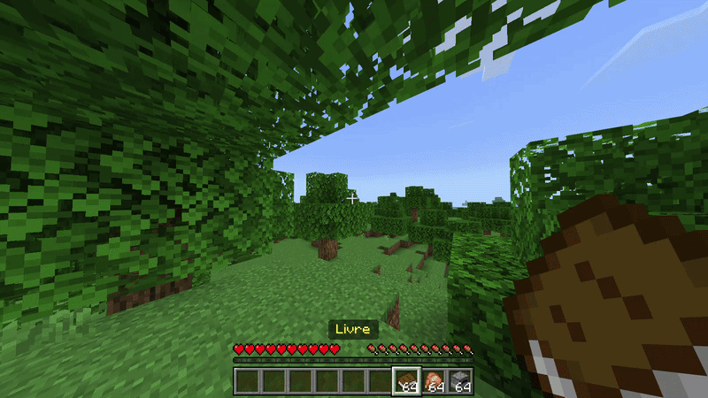
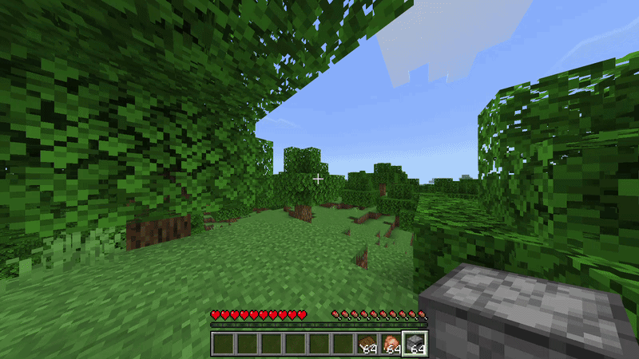

Home
About Me
Home
About Me
Home
About Me
Home
About Me
M'inspirant de InvMenu de Muqsit, j'ai recréé un virion (sorte de librairie pour PMMP) capable de créer des menus de coffre.
Pour savoir comment ça fonctionne, j'ai tout expliqué sur le README de la repo, vous pouvez aller jeter un coup d'oeil ;)
Dans les 3 cas, je saute avant que le menu s'ouvre. C'est juste pour déclencher le menu, bien sûr, vous pouvez choisir la manière d'ouvrir le menu.
Là le menu s'ouvre, et en interagissant avec une viande, le joueur en obtient une.

Ce menu propose une question, et 3 réponses. Les 2 mauvaises mettent le joueur en feu, et la bonne envoie un message dans le chat.

Ici, en mettant un objet dans le premier slot, le four chauffe petit à petit et donne un lingot de netherite à la fin. On peut annuler en enlevant le premier objet. Bien sûr, on peut prendre le lingot de netherite, mais on ne peut pas placer d'objet. Et tous les blocs, le charbon et la poudre de blaze ne peuvent pas être déplacés.
